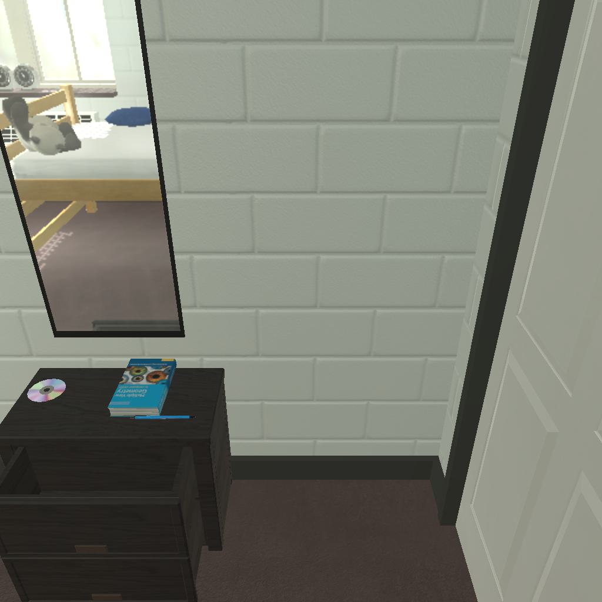

---------------------------------------------------------task: 8---------------------------------------------------------
--------------------------------------------------------------------------------------------------------------------------------------------------------------------
--------------------------------------------------------------------------------------------------------------------------------------------------------------------
Step:--------------------------------------------------------------------------18-------------------------------------------------------------------------------
----------------------------------------
VLM Prompt:
Image1:
Image2:
**Instruction**
1. Analyze the provided images to identify all visible household objects and compare the difference between images (e.h. whether the object is opened or not and taken on hand or not), focusing on those relevant to the task description "put a laptop in desk."
2. Use the analysis of images and the task hint "The agent must find an object of the desired type, pick it up, find the correct location to place it, and put it down there." to answer the question: what is the most reasonable action in the choices for the task description "put a laptop in desk"?
3. Decide and write the answer using the template: The answer is: (i): , where i is the real number. If there is no desired object in images, search every place based on **Initial Observation** to find the object. And if no one is exactly correct, choose a similar answer.
**Initial Observation**
You are in the middle of a room. Looking quickly around you, you can see bed (1), garbagecan (1), desk (1), sidetable (1), drawer (1-5), laundryhamper (1)
**Answer Choices**
(1): go to bed 1
(2): go to garbagecan 1
(3): go to desk 1
(4): go to sidetable 1
(5): go to drawer 1
(6): go to laundryhamper 1
(7): go to drawer 3
(8): go to drawer 4
(9): go to drawer 5
(10): close drawer 2
(11): take book 1 from drawer 2
(12): take cd 1 from drawer 2
(13): take pen 2 from drawer 2
(14): examine drawer 2
**Answer**
Let's think step by step by following the instructions.
----------------------------------------
----------------------------------------
Original Response:
Firstly, we analyze the images provided. In both images, we can see a reflection in the mirror that shows a bed and a sidetable. On the sidetable, there is a visible object that could potentially be a laptop. However, the images do not provide a clear view of the desk or any other household objects mentioned in the initial observation. There are no visible differences between the two images in terms of objects being opened or taken into hand.
Considering the task description "put a laptop in desk," the most reasonable action would be to first locate the laptop. Based on the initial observation, we know there is a desk and a sidetable in the room. Since the sidetable is visible in the mirror and appears to have an object that could be a laptop, the most logical action would be to investigate the sidetable.
Using the provided template, the answer is: (4): go to sidetable 1. This action will allow the agent to confirm whether the object on the sidetable is indeed a laptop and then proceed to place it on the desk if it is. If the object on the sidetable is not a laptop, the agent should then search every place based on the initial observation to find the laptop.
----------------------------------------
----------------------------------------
>>> Refine Original VLM Response and Get Pure Action: No action
----------------------------------------
-----------------------------------------------------------------
Running time: 9.119603633880615 seconds
Total Money: 3.5022500000000027
-----------------------------------------------------------------
-----------------------------------------------------------------
Text Observation:Nothing happens.
-----------------------------------------------------------------
UNSUCCEED